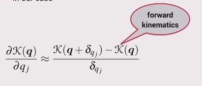

For a 6-link robot, the previous approach to computing the Jacobian becomes unwieldy so a numerical approximation to the forward kinematic function is computed instead.
Just like when you learnt calculus

The derivative is approximated by calculating a finite difference.
What to do if you want to find the end-effectors translational velocity?
Well this can also be said to be the rate of change of translation with respect to time.
This can be found by multiplying the partial derivative of the robots position with respect to \(q_1\) and the rate of change of \(q_1\) with respect to time.
\[\frac{\partial\mathbf{t}}{\partial q_1} \frac{dq_1}{dt} = \frac{d\mathbf{t}}{dt}\]
The end-effectors translational velocity, \(\frac{d\mathbf{t}}{dt}\), can be expressed as \(\begin{pmatrix} \dot{x} \\ \dot{y} \\ \dot{z} \end{pmatrix}\) or \(\begin{pmatrix} \nu_x \\ \nu_y \\ \nu_z \end{pmatrix}\).
Should end with an expression like
\[\begin{pmatrix} \nu_x \\ \nu_y \\ \nu_z \end{pmatrix} \approx \begin{pmatrix} ? \\ ? \\ ? \end{pmatrix} \dot{q_1}\]
The same can be done for the rotational part with some differences.
Using \(\frac{\partial\mathbf{R}}{\partial q_1}\) from step 4,
\[\frac{\partial\mathbf{R}}{\partial q_1} \frac{dq_1}{dt} = \frac{d\mathbf{R}}{dt}\]
Note that \(\mathbf{\dot{R}}=\mathbf{S}(\omega)\mathbf{R}\), where \(\mathbf{S}(\omega)\) is the skew symmetric matrix.